大數據的隱私、安全與治理｜觀念圖解複習
這一章問的都是同一件事：大量資料裡有很多個人的資訊，怎麼用它又不傷害人？從法律給當事人的權利、讓人認不出來的匿名化、加雜訊與「資料不出門一起算」的隱私技術，到資安控制、數據治理與 AI 倫理，一共五道關卡。容易卡住的地方是英文縮寫多、k、l、ε 這些參數的意思，以及「下列何者不是」的否定題。每個單元照「為什麼需要它 → 一步步搭起來 → 名詞各自定義 → 整合比較表 → 記憶鉤子 → 易錯提醒」排列。
- 下面黃框的「工具與名詞速查表」：GDPR、DPIA、SMPC、HE、TEE、MFA、ELK、DLP、SOC 2 各一行用途。
- GDPR 七項權利：查閱、更正、刪除、限制、可攜、反對、不受純自動化決策；沒有「永久保存權」（單元 ①）。
- 參數一句話：k 是群組人數、l 是敏感值種類、ε 越小越隱私也越不準（單元 ②、③）。
工具與名詞速查表
遮住第三欄，看工具名說得出用途；再遮住第一欄，看用途說得出工具名。
| 名稱 | 類別 | 一行用途（可背） | 看到這些字就想到它 |
|---|---|---|---|
| 法規與評估 | |||
| GDPR | 歐盟法律 | 保護歐盟居民的個資，給當事人查、改、刪、帶走等權利 | 歐盟、當事人權利 |
| CCPA／CPRA | 美國加州法律 | 消費者有權知道被蒐集什麼、要求刪除、選擇退出出售 | 加州、知情、退出 |
| 個人資料保護法 | 台灣法律 | 蒐集前要告知目的、類別、期間等；當事人可查詢、刪除 | 台灣、告知義務 |
| DPIA（資料保護影響評估） | 評估流程 | 新專案處理個資前，先找出隱私風險並定好對策 | 上線前、風險評估 |
| DPA（資料處理協議） | 合約 | 規定服務商怎麼處理你交給它的個資 | SaaS、委外 |
| 隱私保護技術 | |||
| k-匿名／l-多樣性 | 匿名化 | 每筆躲進至少 k 筆的群組；群組內敏感值至少 l 種 | 等價類、準識別 |
| 差分隱私 | 加雜訊 | 結果加經過計算的雜訊，看不出某一個人在不在資料裡 | ε、隱私預算 |
| 聯邦學習 | 分散訓練 | 資料留在本地訓練，只把模型更新送去彙整 | 資料不出門 |
| SMPC（安全多方計算） | 密碼學 | 多方各拿碎片一起算，誰都看不到別人的原始資料 | 聯合計算、秘密分享 |
| HE（同態加密） | 密碼學 | 資料加密著也能計算，解密後和明文算的一樣 | 加密狀態下運算 |
| TEE（可信執行環境） | 硬體 | 晶片裡隔出受保護的區域，在裡面解開資料來算 | 硬體隔離、使用中 |
| 資安控制與監控 | |||
| IAM（身分與存取管理） | 存取控制 | 集中管理帳號、角色、權限 | 帳號、角色、權限 |
| MFA（多因素驗證） | 身分驗證 | 密碼之外再加手機碼或生物特徵，至少兩種 | 登入、驗證碼 |
| 零信任 | 安全模型 | 不因在內網就相信，每次請求都重新確認 | 預設不信任 |
| ELK（Elasticsearch、Logstash、Kibana） | 日誌管理 | 收集、搜尋、視覺化大量日誌，找異常 | 日誌、監控、警報 |
| Splunk | 日誌管理 | 商用的日誌收集、搜尋、警報一站式工具 | 日誌分析 |
| DLP（資料外洩防護） | 防外流 | 用關鍵字、規則、指紋辨認敏感資料，擋下外寄 | 外寄、攔截 |
| 滲透測試 | 資安測試 | 請人扮演攻擊者實際試打，驗證防禦 | 模擬攻擊 |
| TLS／HTTPS | 加密協定 | 保護傳輸中的資料 | 網路傳送、傳輸中 |
| 認證與標準 | |||
| SOC 2 | 稽核報告 | 第三方查核服務商的安全、可用性、保密等控制 | 服務商審查 |
| ISO 27001 | 國際標準 | 資訊安全管理制度的認證，自願取得，不是法律 | ISMS、認證 |
先看全貌全章地圖：保護資料的五道關卡
本章問的都是同一件事：大量資料裡有很多個人的資訊，怎麼用它又不傷害人？五個單元剛好是五道關卡，從「法律怎麼說」到「技術怎麼做」，再到「組織怎麼管」：
| 關卡 | 這一關在問什麼 | 本章的關鍵名詞 |
|---|---|---|
| ① 法規與權利 | 當事人有哪些權利？企業要先做什麼？ | GDPR、CCPA／CPRA、台灣個資法、DPIA、資料駐留 |
| ② 匿名化 | 拿掉姓名夠不夠？怎麼讓人認不出來？ | 準識別、重新識別、k-匿名、l-多樣性、t-接近 |
| ③ 加雜訊與一起算 | 不看原始資料，也能分析、訓練嗎？ | 差分隱私、ε、聯邦學習、模型下毒、SMPC、HE、TEE |
| ④ 資安控制 | 誰能進來？資料怎麼鎖？出事怎麼辦？ | 驗證與授權、最小權限、零信任、加密、責任共擔、DLP、備份 |
| ⑤ 治理與倫理 | 組織怎麼管資料？合法就夠了嗎？ | 分類、詮釋資料、血緣、最小化、設計即隱私、公平、過濾氣泡 |
單元 ①法規與當事人權利：GDPR、CCPA／CPRA、台灣個資法、資料駐留、DPIA
為什麼需要它？ 資料是關於「人」的。各地的法律都在回答同一個問題：這個人對自己的資料有什麼控制權？企業拿資料之前要做什麼？考題常把真的權利和編出來的權利混在一起，再用「下列何者不是」來問。所以這個單元先把權利清單背熟，再練否定題的讀題方法。
一步步搭起來
- 先認角色。「當事人」（資料主體）是資料講的那個人；「控制者」是決定為什麼、怎麼處理資料的組織；「處理者」是受託處理的服務商。
- 處理要有理由。GDPR 要求處理個資要有合法依據，例如當事人同意、履行契約、法律義務；敏感個資（健康、種族、宗教等）原則上不能處理，常見的例外是取得明確同意。
- 當事人能做什麼。查閱、更正、刪除、限制處理、帶走（可攜）、反對，以及重大決定不只交給機器。
- 企業要先做功課。新專案先做 DPIA 找風險；資料放在哪個國家要合法規（資料駐留）；用完、到期就刪除（儲存期限限制）。
- 讀題。看到「不是」「不包括」「錯誤的」，先圈起來，再逐一判斷每個選項的真假。
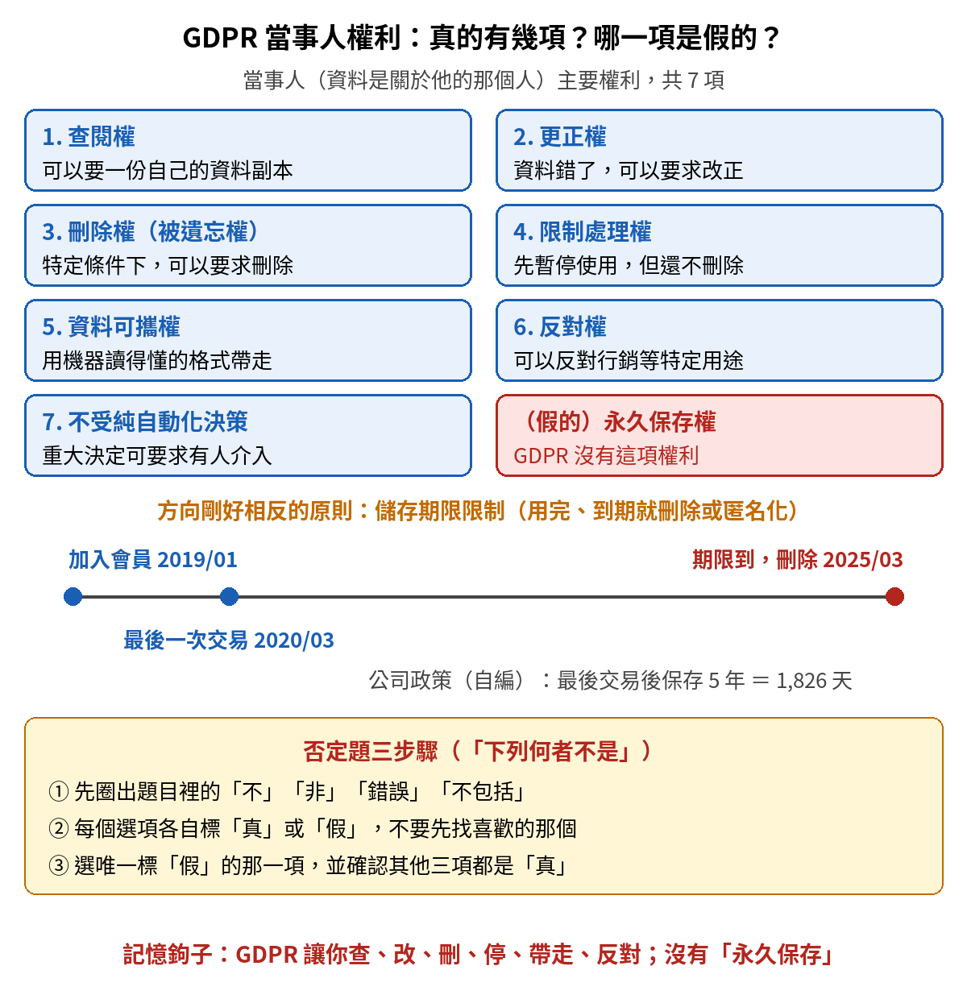
名詞各自定義
GDPR 的七項當事人權利
- 查閱權：可以問組織有沒有在處理我的資料，並要一份副本。
- 更正權：資料錯了或不完整，可以要求改正、補齊。
- 刪除權（被遺忘權）：在特定條件下（例如目的已達成、撤回同意），可以要求刪除。不是任何時候都能刪，例如法律要求保存的紀錄。
- 限制處理權：有爭議時先「凍結」：資料留著，但暫停使用。
- 資料可攜權：用結構化、常用、機器讀得懂的格式拿回自己的資料，還可以要求直接轉給另一家。
- 反對權：可以反對某些處理，例如直接行銷。
- 不受純自動化決策：對自己有重大影響的決定（例如貸款審核），可以要求不要只由機器決定，要有人介入、能表達意見。
儲存期限限制（不是「永久保存權」）
- 是什麼：GDPR 的處理原則之一：個資只保存到達成目的所需的時間，之後刪除或匿名化。
- 為什麼常考：考題會編一個「永久保存權」混進權利清單。它的方向和 GDPR 剛好相反：法律要企業少留、早刪，不是幫當事人要求企業永久保存。
- 相關原則：目的限制、資料最小化、正確性、完整性與保密性、合法公平透明、問責。
敏感個資與明確同意
- 敏感個資：健康、基因、生物特徵、種族、宗教、政治立場、性傾向等，外洩或誤用的傷害特別大。
- 規則：原則上禁止處理，有例外才行；最常見的例外是當事人明確同意（清楚、主動、針對特定目的），其他例外例如醫療、公共衛生、法律主張。
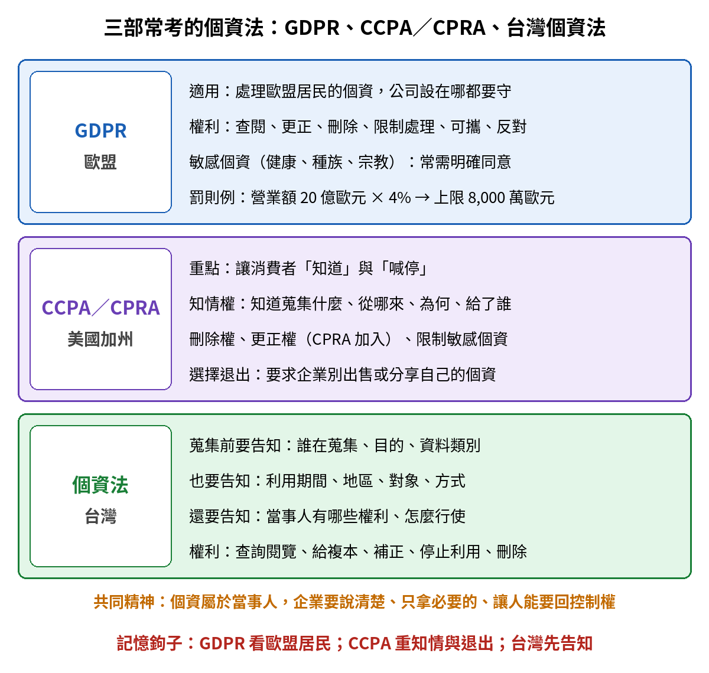
CCPA／CPRA（美國加州消費者隱私法）
- 適用：達到營收或資料量門檻、處理加州居民個資的企業。CPRA 是 2020 年通過的修正與擴充。
- 核心權利：知情權（知道蒐集了哪些個資、從哪裡來、為什麼、分享給誰）、刪除權、更正權（CPRA 加入）、選擇退出出售或分享個資、限制使用敏感個資，以及行使權利不受差別待遇。
- 和 GDPR 的差別：CCPA 的重點放在讓消費者「知道」和「喊停」（選擇退出）；GDPR 是處理前就要有合法依據。
台灣個資法的告知義務
- 是什麼：企業或機關蒐集個資時，要先告訴當事人：誰在蒐集、蒐集目的、資料類別、利用的期間、地區、對象與方式、當事人有哪些權利與怎麼行使、不提供會有什麼影響。
- 當事人權利：查詢或請求閱覽、請求製給複製本、請求補充或更正、請求停止蒐集處理或利用、請求刪除。
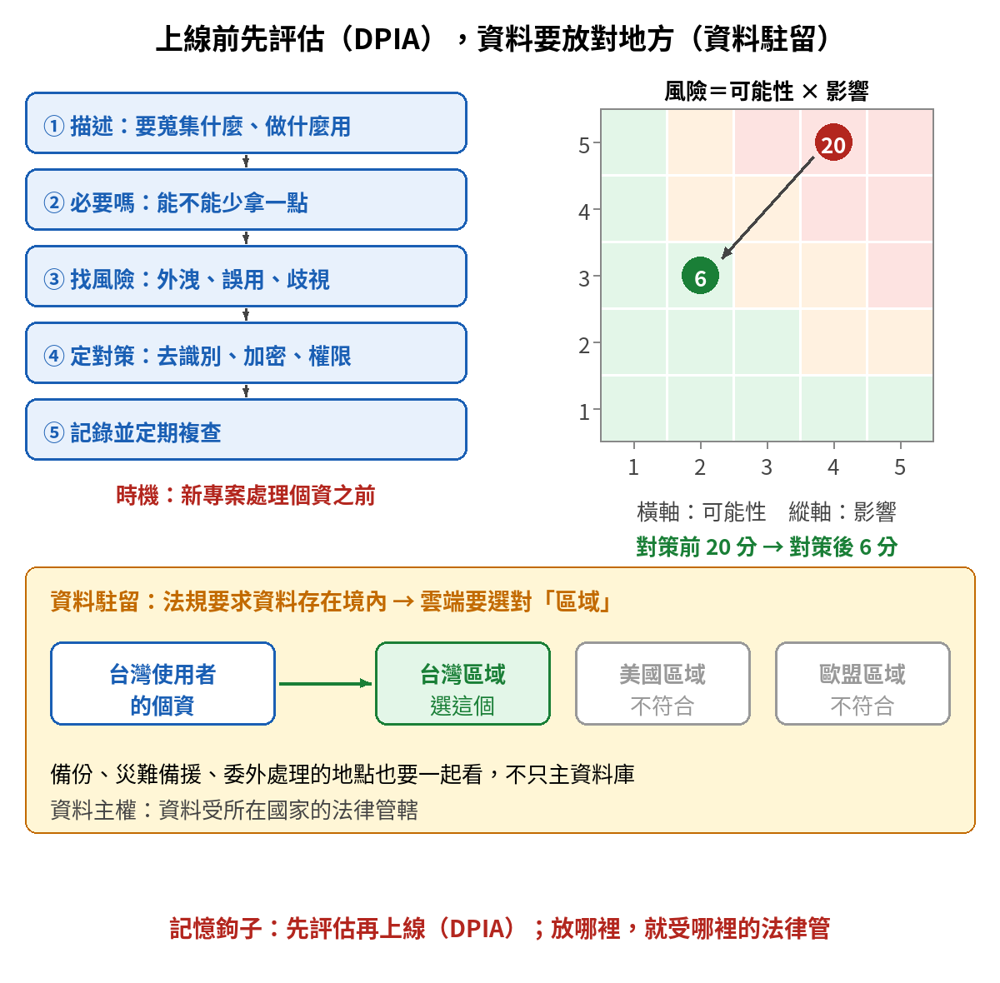
DPIA（資料保護影響評估）／PIA（隱私影響評估）
- 是什麼：在新專案、新系統處理個資之前，有系統地找出隱私風險、評估嚴重程度、定好降低風險的做法，並留下紀錄。
- 什麼時候要特別想到它：大規模處理敏感個資、大規模監控、用新技術做自動化決策這類高風險處理。
- 例子：上圖風險分數＝可能性 × 影響，對策前 20 分，加上去識別、加密、權限控管後降到 6 分。
資料駐留與資料主權
- 資料駐留 Data Residency：資料實際存放在哪個國家或區域。有些法規要求特定資料存在境內，雲端服務商提供「區域選擇」來配合。
- 資料主權 Data Sovereignty：資料受到所在國家法律的管轄。存在哪裡，就可能要受哪裡的法律約束。
- 提醒：備份、災難備援、委外處理的地點也算，不只主資料庫。
否定題審題法
- 第 1 步：先圈出題目裡的「不」「非」「錯誤」「不包括」「不屬於」。
- 第 2 步：每個選項各自標「真」或「假」，不要先找「看起來最熟」的那個。
- 第 3 步：選唯一標「假」的那一項，並確認其他三項都是「真」。如果有兩個「假」，回頭再讀一次題目。
整合比較表（法規比較表）
| 比較項目 | GDPR（歐盟） | CCPA／CPRA（美國加州） | 個人資料保護法（台灣） |
|---|---|---|---|
| 保護誰 | 歐盟居民 | 加州居民（消費者） | 在台灣被蒐集個資的人 |
| 企業的基本功 | 處理要有合法依據 | 揭露蒐集與分享情形 | 蒐集前告知 |
| 代表權利 | 查閱、更正、刪除、限制、可攜、反對、不受純自動化決策 | 知情、刪除、更正、選擇退出出售或分享、限制敏感個資 | 查詢閱覽、給複本、補正、停止利用、刪除 |
| 敏感個資 | 原則禁止，常見例外是明確同意 | 可要求限制使用 | 特種個資原則禁止，有例外 |
| 記法 | 查改刪停帶反 | 知道與喊停 | 先告知 |
- GDPR 七項權利：查閱、更正、刪除（被遺忘）、限制、可攜、反對、不受純自動化決策。沒有「永久保存權」。
- 儲存期限限制：用完、到期就刪或匿名化；方向和「永久保存」相反。
- 敏感個資常需明確同意；CCPA 重知情與退出；台灣個資法先告知。
- 上線前做 DPIA；資料放在哪裡，就可能受哪裡的法律管。
- 否定題：圈「不」→ 逐項標真假 → 選唯一的假。
單元 ②匿名化家族：直接識別與準識別、重新識別、k-匿名、l-多樣性、t-接近
為什麼需要它？ 把姓名、身分證字號刪掉，資料就安全了嗎？不一定。郵遞區號、生日、性別這些欄位單獨看不出是誰，組合起來再拿去和別的資料比對，常常就能認出人。所以需要一套方法，讓每一筆資料「躲進人群裡」，而且躲進去之後，別人也猜不出他的敏感資訊。
一步步搭起來
- 分清楚兩種欄位。一個就認得出人的是直接識別（姓名、證號、電話）；單獨不行、組合可以的是準識別（郵遞區號、生日、性別）。
- 知道風險。只刪直接識別欄位，別人仍可能用準識別欄位和外部名冊比對，認出人來（重新識別、連結攻擊）。
- 讓每筆躲進群組。把準識別欄位泛化（36 歲 → 30–39）或抑制（遮掉），讓每個群組至少有 k 筆一模一樣：k-匿名。
- 群組裡的答案也要不同。如果一組人全都是同一種病，躲進群組也沒用：所以要 l-多樣性；再進一步要求每組的比例接近全體：t-接近。
- 接受代價。泛化越多越安全，資料也越粗，能分析的細節變少。
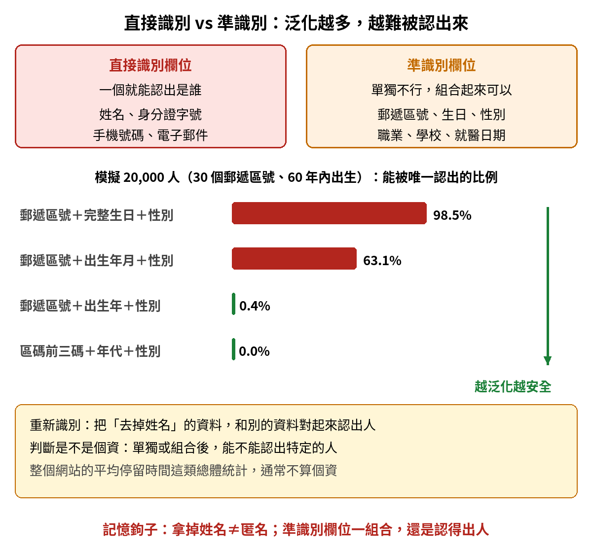
名詞各自定義
直接識別欄位與準識別欄位
- 直接識別：單獨一個就能指出是誰：姓名、身分證字號、手機號碼、電子郵件。
- 準識別 Quasi-identifier：單獨看不出是誰，和其他欄位或外部資料組合後就可能認出人：郵遞區號、生日、性別、職業、就醫日期。
- 例子：上圖模擬 20,000 人，只留「郵遞區號＋完整生日＋性別」，就有 98.5% 的人能被唯一認出。
個人可識別資訊 PII
- 判斷方法：問自己：這筆資訊單獨或和其他資料組合後，能不能認出特定的人？能，就是個資。
- 通常是：姓名、證號、電話、地址、生日、IP 位址、裝置識別碼、病歷。
- 通常不是：已彙總、看不出個人的統計數字，例如整個網站的平均停留時間。
重新識別與連結攻擊
- 重新識別：把去識別後的資料，重新對回真實的人。
- 連結攻擊：拿兩份資料共有的準識別欄位去比對，例如醫療資料和選民名冊都有郵遞區號、生日、性別（第 12 章也有圖例）。
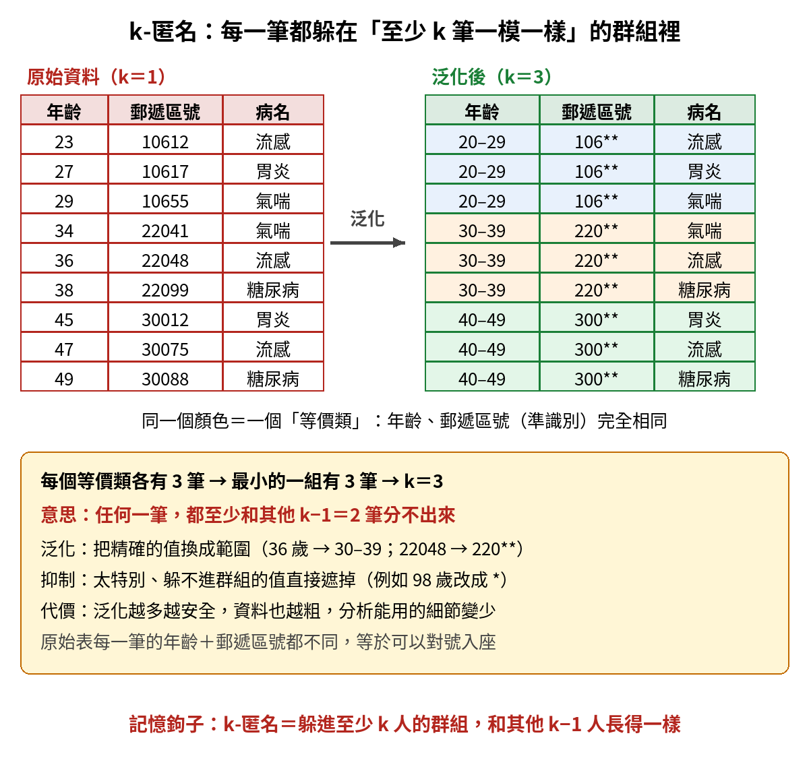
等價類 Equivalence Class
- 是什麼：準識別欄位完全相同的一群紀錄。上圖泛化後，「20–29、106＊＊」這 3 筆就是一個等價類。
k-匿名 k-Anonymity
- 是什麼：每個等價類至少有 k 筆紀錄。
- 換句話說：任何一筆紀錄，都至少和其他 k−1 筆分不出來。因為群組有 k 筆，扣掉自己，剩下的就是 k−1 筆。
- 例子：上圖每組 3 筆 → k＝3：每一筆都和其他 2 筆長得一樣，攻擊者最多猜到「是這 3 個人之一」。
- 怎麼做到：泛化、抑制。
泛化與抑制
- 泛化 Generalization：把精確的值換成比較寬、比較不精確的值：36 歲 → 30–39；22048 → 220＊＊；台北市大安區 → 台北市。
- 抑制 Suppression：太特別、怎麼泛化都躲不進群組的值，直接遮掉或整筆不公開，例如 98 歲改成「*」。
- 遮罩與假名化：遮罩是把敏感值改成看起來像真的假值或部分遮蔽（例如卡號只留後四碼）；假名化是用代號取代姓名，對照表要另外保管。
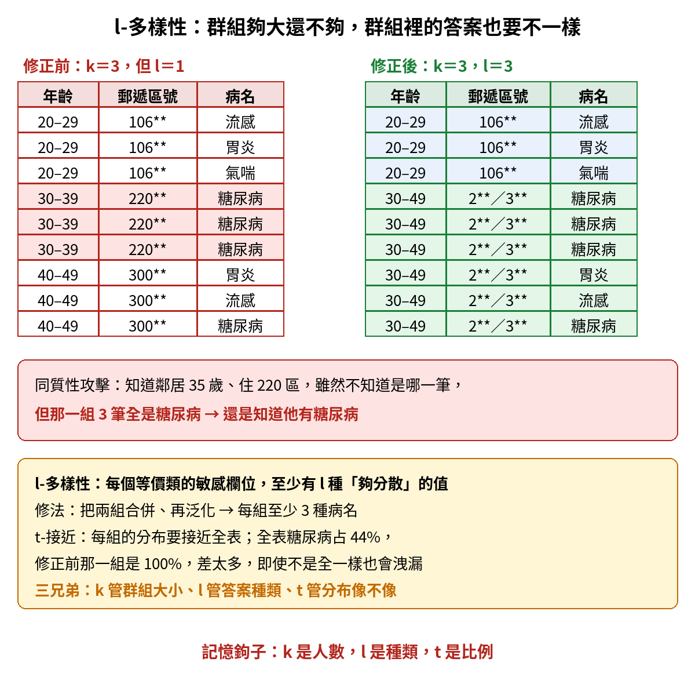
l-多樣性 l-Diversity
- 為什麼需要：k-匿名只保證「群組夠大」，沒管群組裡的敏感欄位。如果一組 3 個人全是糖尿病，攻擊者不必知道是哪一筆，也能確定他有糖尿病：這叫同質性攻擊。
- 是什麼：每個等價類裡，敏感欄位至少有 l 種「夠分散」（良好表示）的值。
- 例子：上圖修正前 l＝1，合併再泛化後每組至少 3 種病名，l＝3。
- 還擋不住：背景知識攻擊（例如知道某人不可能得某種病，就能刪掉選項），以及各種病名比例差太多的情況。
t-接近 t-Closeness
- 是什麼：每個等價類的敏感值分布，要和全表的分布接近，差距不超過 t。
- 例子：全表糖尿病占 44%，修正前那一組是 100%，差太多，即使改成 2 種病名但比例仍懸殊，也會透露資訊。
整合比較表（匿名化家族）
| 方法 | 要求什麼 | 擋得住什麼 | 擋不住什麼 | 記法 |
|---|---|---|---|---|
| 只刪直接識別 | 拿掉姓名、證號 | 一眼認出 | 連結攻擊 | 不夠 |
| k-匿名 | 每組至少 k 筆 | 對號入座 | 同質性攻擊 | k 是人數 |
| l-多樣性 | 每組敏感值至少 l 種 | 同質性攻擊 | 比例懸殊、背景知識 | l 是種類 |
| t-接近 | 每組分布接近全表 | 比例懸殊 | 仍有殘餘風險，資料變粗 | t 是比例 |
| 差分隱私（單元③） | 結果加計算過的雜訊 | 推回某一個人 | 雜訊大時不準 | ε 是預算 |
- 拿掉姓名≠匿名：準識別欄位一組合，還是認得出人。
- k-匿名：躲進至少 k 筆的群組，和其他 k−1 筆長得一樣。
- l-多樣性：群組裡的敏感值至少 l 種，擋同質性攻擊。
- k 是人數、l 是種類、t 是比例；泛化越多越安全，資料也越粗。
單元 ③差分隱私與協作式隱私技術：雜訊、ε、拉普拉斯與高斯、聯邦學習的挑戰與下毒、SMPC、HE、TEE
為什麼需要它？ 匿名化是在「資料本身」動手腳，但只要資料要公開或交出去，就可能被比對。另一條路是：不交出原始資料，只交出加了雜訊的結果（差分隱私），或讓大家各自保管資料、一起計算（聯邦學習、安全多方計算、同態加密、可信執行環境）。每種方法都有代價：準確度、速度或通訊量。
一步步搭起來
- 公布結果時加雜訊。在統計結果或訓練過程中加入經過計算的隨機雜訊，讓人看不出某一個人在不在資料裡：差分隱私。
- 用 ε 控制雜訊大小。ε（隱私預算）越小，雜訊越大、越隱私、越不準；每查一次都會花掉一些預算。
- 選雜訊的分布。計數、加總這類查詢常用拉普拉斯；訓練模型時對梯度加雜訊常用高斯。
- 資料不出門，一起訓練。聯邦學習讓資料留在本地，只傳模型更新；但要面對資料不一致、傳輸量大、裝置快慢不一，以及有人送「毒」更新。
- 其他一起算的方法。安全多方計算拆碎片、同態加密鎖著算、可信執行環境關在硬體小房間裡算。
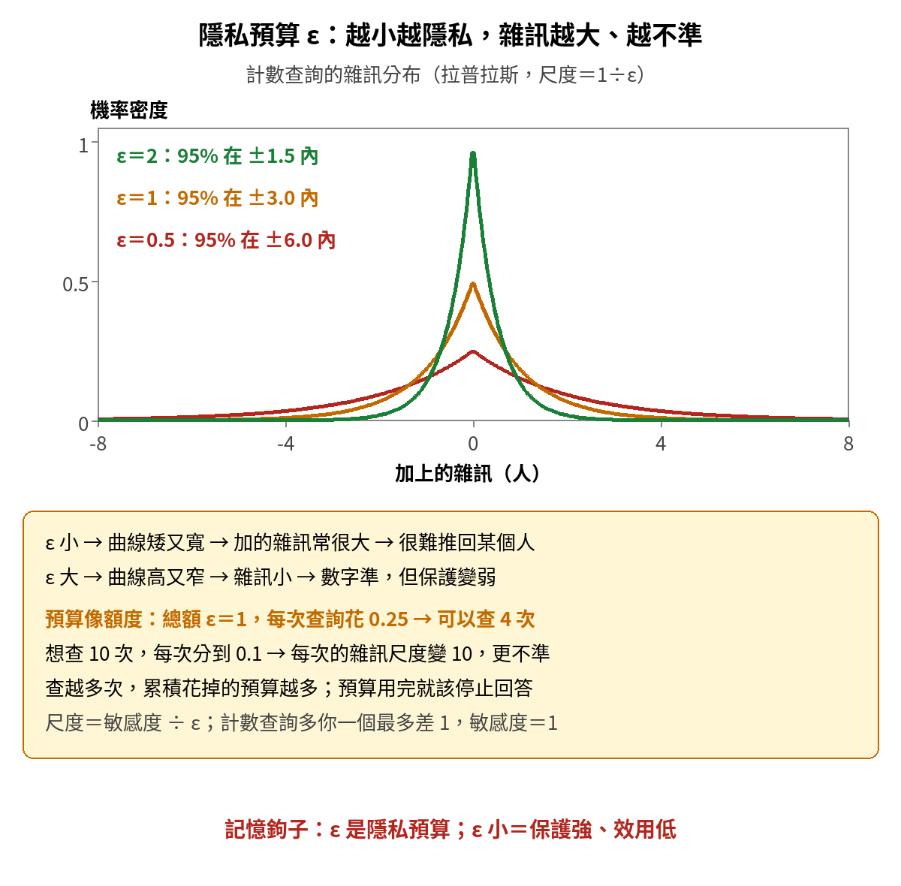
名詞各自定義
差分隱私 Differential Privacy
- 核心承諾：資料裡多你一個或少你一個，公布的結果幾乎一樣，所以從結果推不回你。
- 怎麼做到：在查詢結果或訓練過程加入經過精心校準的隨機雜訊。
- 可以用在：統計發布（人口普查、使用量統計）、模型訓練（每一步對梯度加雜訊，例如 DP-SGD）。
隱私預算 ε（Epsilon）
- 是什麼：控制隱私保護強度的參數。ε 越小 → 雜訊越大 → 保護越強，但結果的效用（準確度）越低；ε 越大則相反。
- 為什麼叫預算：每回答一次查詢都會花掉一些 ε，花越多次，累積的洩漏越多。上圖總額 1，每次花 0.25 可以查 4 次。
- 敏感度：多一個人或少一個人，查詢結果最多會變多少。計數查詢最多差 1，敏感度＝1。雜訊尺度＝敏感度 ÷ ε。
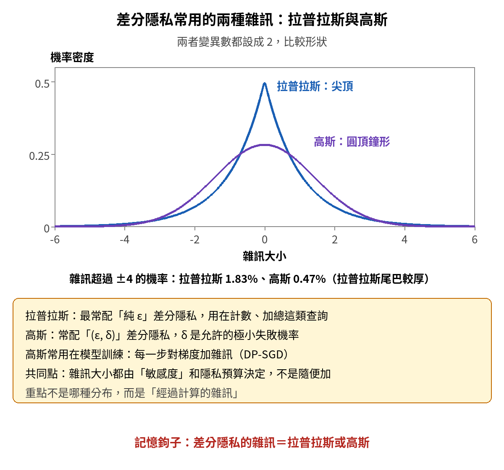
拉普拉斯分布與高斯分布
- 拉普拉斯 Laplace：中間尖、兩邊尾巴較厚。最常搭配「純 ε」差分隱私，用在計數、加總這類數值查詢，尺度＝敏感度 ÷ ε。
- 高斯 Gaussian（常態）：圓頂鐘形。常搭配「(ε, δ)」差分隱私（δ 是允許的極小失敗機率），模型訓練時對梯度加雜訊多用它。
- 不是隨便加：均勻分布這類「隨便亂加」的雜訊，沒有經過敏感度和 ε 的校準，就談不上差分隱私的保證。
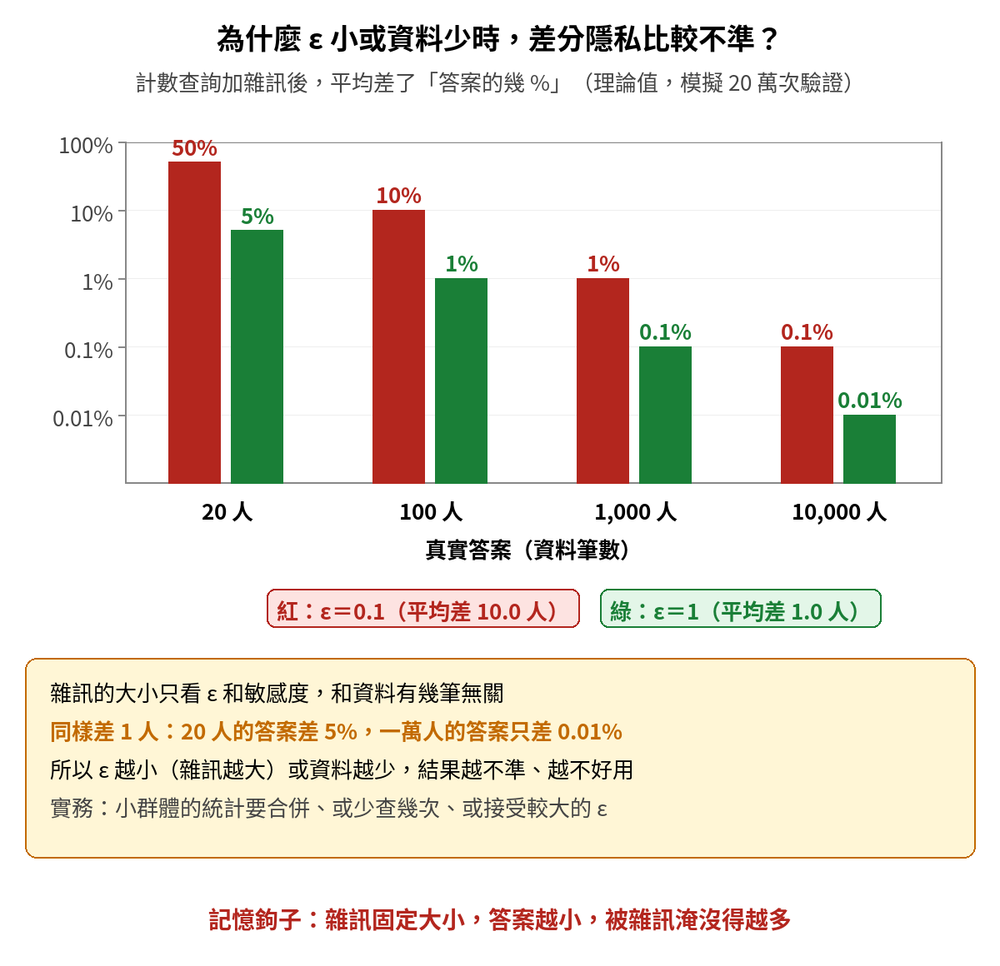
差分隱私的缺點：準確度下降
- 原因一：ε 小：ε 越小，加的雜訊越大，結果離真實值越遠。
- 原因二：資料少：雜訊的大小只由 ε 和敏感度決定，和資料有幾筆無關。同樣差 1 人，20 人的答案差了 5%，一萬人的答案只差 0.01%。所以小群體、小樣本的統計最容易被雜訊淹沒。
- 其他挑戰：預算怎麼分配給很多次查詢、參數不好設定、要說服使用者接受「有雜訊的數字」。
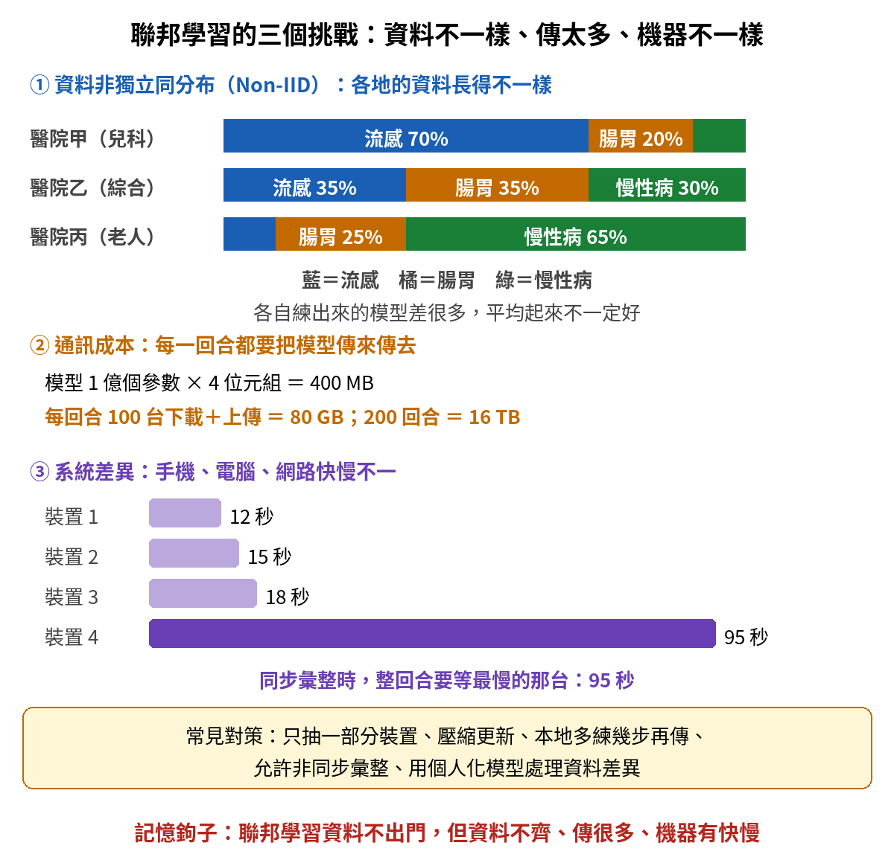
聯邦學習 Federated Learning 與三個挑戰
- 核心想法：模型在資料所在的地方（手機、醫院）訓練，只把模型更新（梯度或權重）送到伺服器彙整，原始資料不集中。
- 挑戰一：資料非獨立同分布 Non-IID：各地資料長得不一樣（上圖兒科醫院以流感為主、老人醫院以慢性病為主），各自練出的模型差很多，平均起來不一定好。
- 挑戰二：通訊成本：每一回合都要傳模型。上圖 400 MB 的模型、100 台、200 回合就要傳 16 TB。
- 挑戰三：系統差異：裝置的運算力、網路、電量不同；同步彙整時，整回合要等最慢的那台。
- 仍有的隱私風險：模型更新本身也可能透露部分資訊，常再搭配差分隱私或安全彙整。
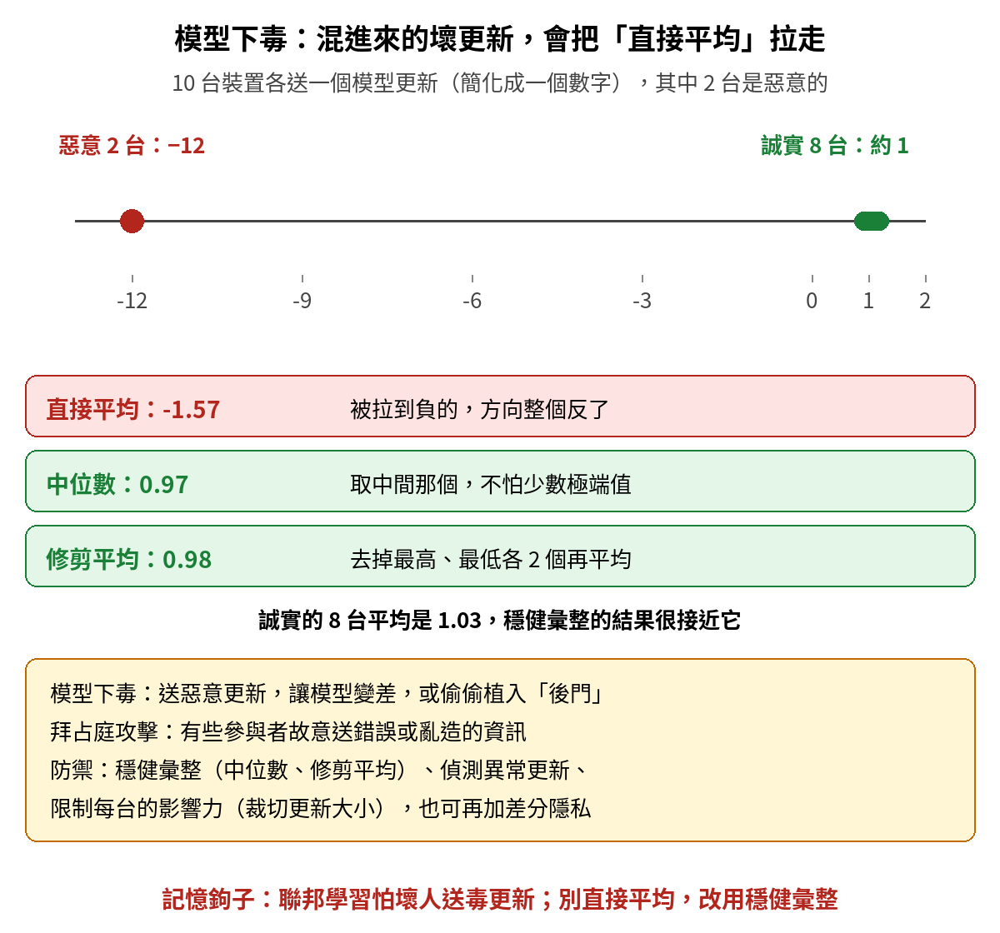
模型下毒與拜占庭攻擊
- 模型下毒 Model Poisoning：惡意參與者送出精心設計的更新，讓整體模型變差，或偷偷植入後門（看到特定觸發條件就做出攻擊者想要的反應）。
- 拜占庭攻擊 Byzantine Attack：名稱來自「拜占庭將軍問題」：一群合作者裡有人故意送錯誤或亂造的訊息。
- 為什麼直接平均危險：平均很容易被極端值拉走。上圖 2 台惡意更新就把平均從約 1 拉到 −1.57。
- 防禦：穩健彙整（中位數、修剪平均、Krum 等）、偵測異常更新、裁切每台更新的大小、限制每台的影響力。
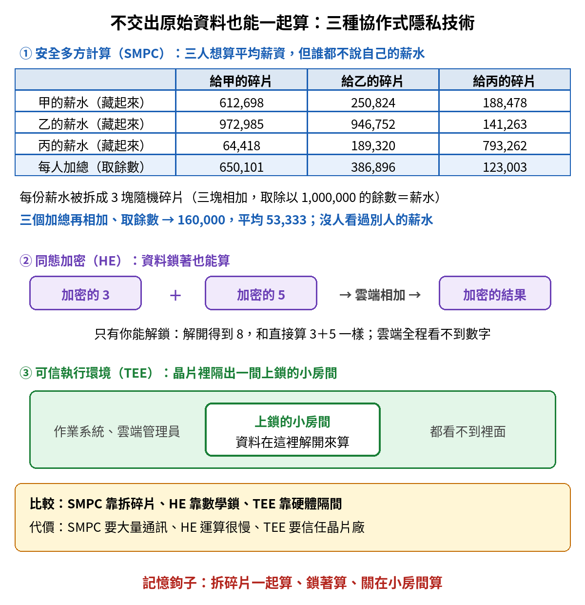
安全多方計算 SMPC
- 是什麼：多個參與方一起計算一個結果，每一方都看不到別人的原始資料。
- 例子：上圖三人把薪水拆成隨機碎片互相交換，每人只看到一堆亂數，最後合起來得到總和 160,000。
- 代價：參與方之間要大量來回通訊，計算慢。
同態加密 HE
- 是什麼：資料保持加密的狀態直接計算，解密後的結果和用明文算的一樣。
- 用途：把資料交給雲端算，雲端全程看不到內容。
- 代價：運算量非常大、很慢。
可信執行環境 TEE
- 是什麼：處理器裡隔出一塊受硬體保護的區域，資料只在裡面解開來算，作業系統和雲端管理員都看不到。
- 代價：要信任晶片製造商；曾有針對硬體的旁路攻擊研究。
- 組合使用：實務上常把 SMPC、HE、TEE 和聯邦學習、差分隱私混搭，取長補短。
整合比較表（協作式隱私技術比較表）
| 技術 | 怎麼保護 | 原始資料誰看得到 | 主要代價 | 記法 |
|---|---|---|---|---|
| 差分隱私 | 結果或梯度加計算過的雜訊 | 收集方（公布的是加雜訊結果） | ε 小或資料少時不準 | 加雜訊 |
| 聯邦學習 | 資料留本地，只傳模型更新 | 只有本地 | Non-IID、通訊量、快慢不一、下毒 | 資料不出門 |
| SMPC | 拆成碎片一起算 | 沒有任何一方看得到全部 | 大量通訊、慢 | 拆碎片 |
| HE | 加密狀態下直接計算 | 沒人看到明文 | 運算非常慢 | 鎖著算 |
| TEE | 硬體隔離區域裡解開來算 | 只有那塊硬體區域 | 要信任晶片廠 | 關在小房間 |
- 差分隱私＝加經過計算的雜訊；ε 是隱私預算，ε 小＝保護強、效用低。
- 雜訊用拉普拉斯（計數查詢）或高斯（訓練梯度）。
- 雜訊大小和資料筆數無關 → 資料越少，誤差占比越大 → 越不準。
- 聯邦學習的挑戰：資料不一致、傳很多、機器有快慢；怕下毒，別直接平均，改用穩健彙整。
- SMPC 拆碎片、HE 鎖著算、TEE 關在小房間算。
單元 ④資安控制：驗證與授權、最小權限、零信任、加密三狀態、責任共擔、日誌與 DLP、備份與測試
為什麼需要它？ 隱私技術再好，如果任何人都能登入、資料庫沒上鎖、外洩了也沒人發現，一切都白費。資安控制回答四個問題：誰能進來？能做什麼？資料怎麼鎖？出事時看得到、救得回來嗎？放到雲端時，還要分清楚哪些事是雲端業者負責、哪些是自己負責。
一步步搭起來
- 先認人。身分驗證確認「你是誰」，最好用多因素驗證（MFA）。
- 再給門。授權決定「你能做什麼」；只給完成工作需要的權限（最小權限），不因在內網就相信（零信任）。
- 把資料鎖起來。存著、傳送中、使用中三種狀態都要保護；要連雲端員工都看不到，就在自己這端先加密。
- 分清楚責任。雲端業者顧好「雲本身」，客戶顧好「放在雲裡的東西」，資料和帳號權限都是客戶的事。
- 看得到、擋得住、救得回。日誌監控找異常、DLP 擋外流、滲透測試找漏洞、備份防勒索。
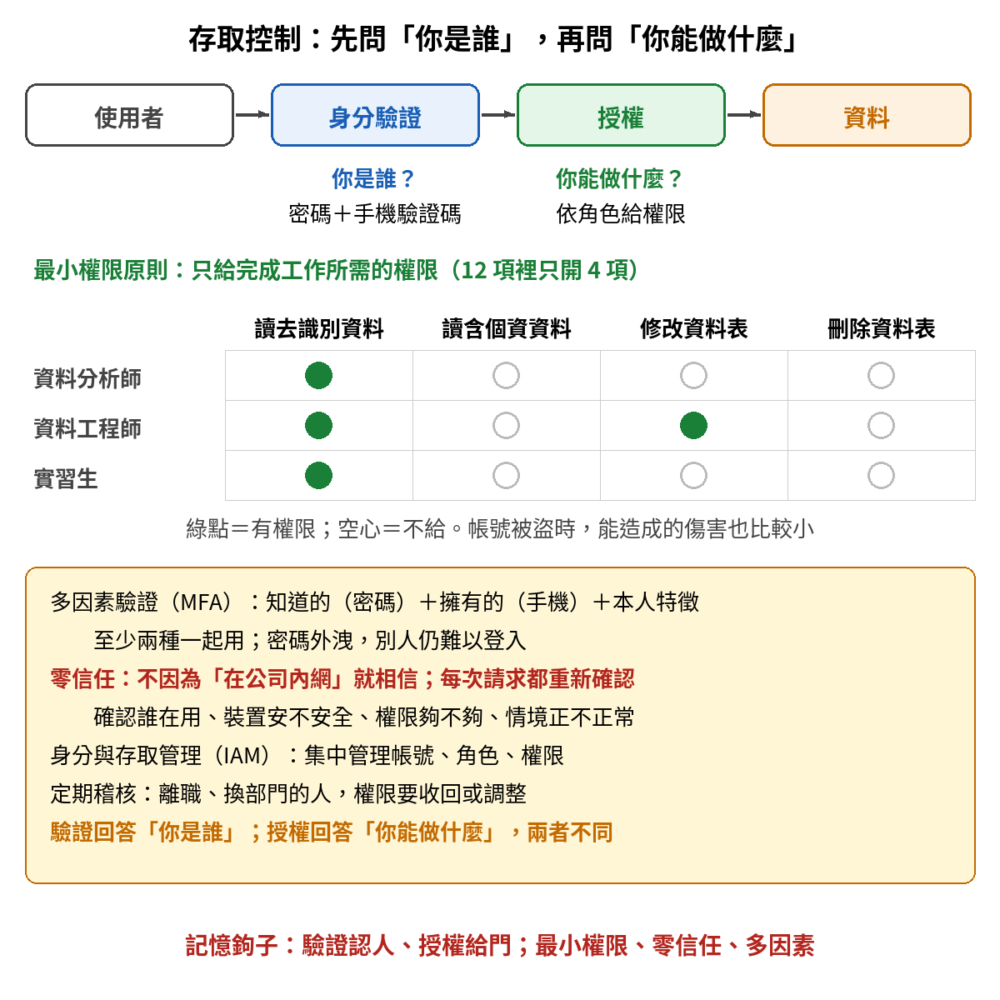
名詞各自定義
身分驗證 Authentication 與授權 Authorization
- 身分驗證：確認「你是誰」：密碼、手機驗證碼、指紋、憑證。
- 授權：確認「你能做什麼」：可以讀哪些表、能不能修改或刪除。常依角色給權限（角色型存取控制）。
- 關係：先驗證、再授權。兩者合起來是防止未經授權存取敏感資料最基本的控制。
最小權限原則 Principle of Least Privilege
- 是什麼：每個人、每個服務帳號，只給完成工作所需的最少權限，用完就收回。
- 好處：帳號被盜或有人出錯時，能造成的傷害比較小。上圖 12 項權限只開 4 項。
零信任 Zero Trust 與多因素驗證 MFA
- 零信任：預設不信任任何使用者或裝置，不管在公司內網還是外面；每次存取都重新確認身分、裝置狀態、權限與情境。口號是「永不預設信任，持續驗證」。
- MFA：結合兩種以上的驗證因素：你知道的（密碼）、你擁有的（手機、實體金鑰）、你本身的（指紋、臉）。密碼外洩，別人仍難以登入。
- IAM：身分與存取管理，集中管理帳號、角色、權限，並定期稽核。
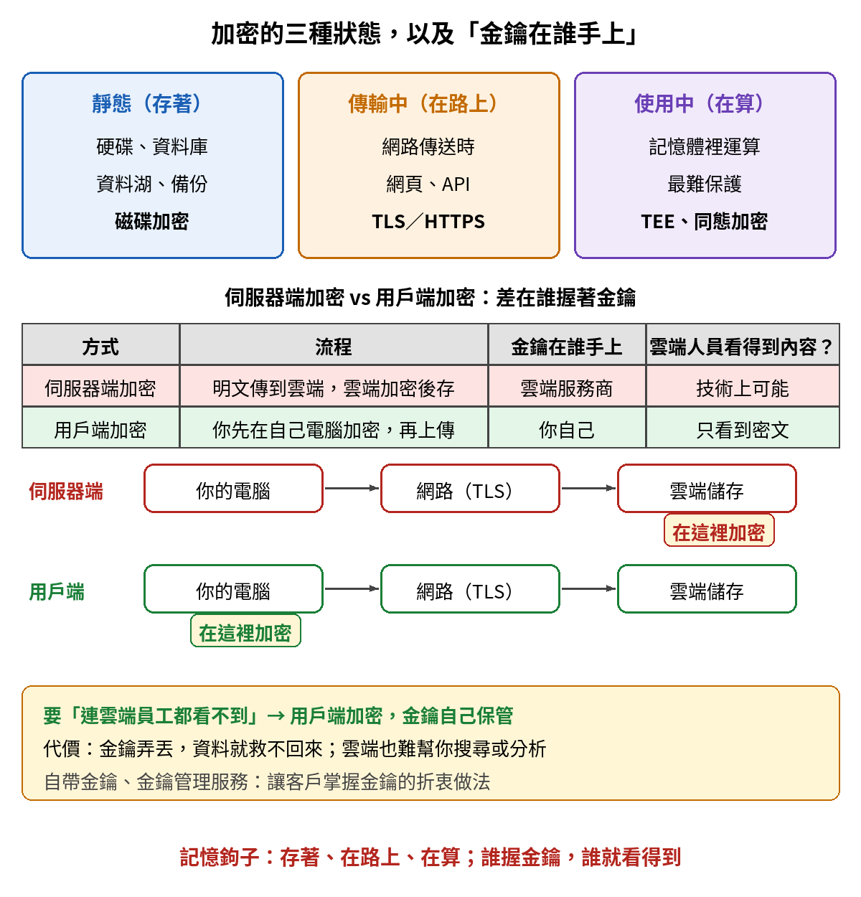
加密的三種狀態
- 靜態加密 Encryption at Rest：保護存起來的資料：硬碟、資料庫、資料湖、備份。
- 傳輸中加密 Encryption in Transit：保護在網路上傳送的資料，例如 TLS／HTTPS。
- 使用中加密 Encryption in Use：保護正在記憶體裡運算的資料，最難做，靠 TEE、同態加密等技術。
用戶端加密 vs 伺服器端加密
- 伺服器端加密：資料以明文送到雲端，由雲端加密後儲存，金鑰由雲端業者管理，技術上雲端端仍有可能解開。
- 用戶端加密 Client-Side Encryption：資料在送出之前就在自己這端加密，金鑰自己保管，雲端只拿到密文，連雲端員工也讀不到。
- 代價：金鑰弄丟就救不回來；雲端也難幫你搜尋、分析這些資料。折衷做法是自帶金鑰或用金鑰管理服務。
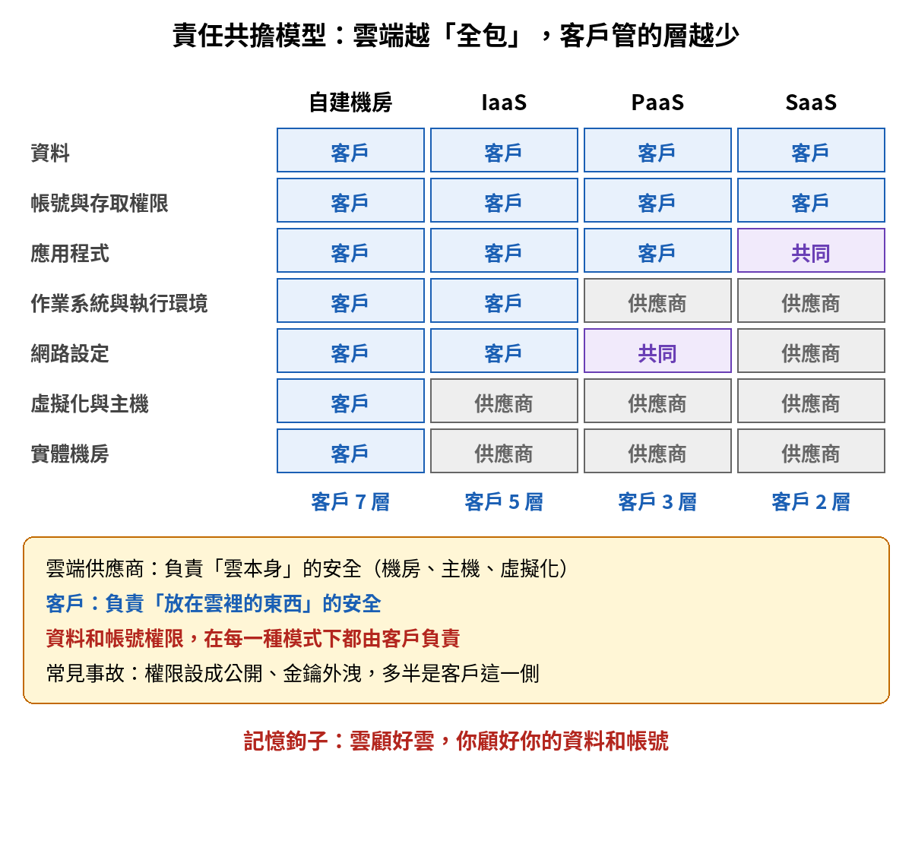
責任共擔模型 Shared Responsibility Model
- 是什麼：雲端業者負責「雲本身」的安全（機房、主機、網路基礎設施、虛擬化）；客戶負責「放在雲裡的東西」（資料、帳號權限、設定、自己的應用程式）。
- 越全包、客戶管越少：上圖 IaaS 客戶管 5 層、PaaS 管 3 層、SaaS 管 2 層，但資料和帳號權限在每一種模式都是客戶的責任。
- 常見事故：儲存空間權限設成公開、金鑰寫在程式碼裡外洩，多半發生在客戶這一側。
- 客戶的基本功：強密碼與 MFA、嚴格管理 IAM、定期稽核設定、加密敏感資料。
多租戶風險 Multi-tenancy
- 是什麼：很多客戶（租戶）共用同一套雲端平台或硬體。
- 風險：一個租戶的漏洞或異常活動可能波及其他租戶：搶資源、設定錯誤導致資料互相看得到、跨租戶攻擊。
- 對策：嚴格的租戶隔離、各自的加密金鑰、資源上限、監控。
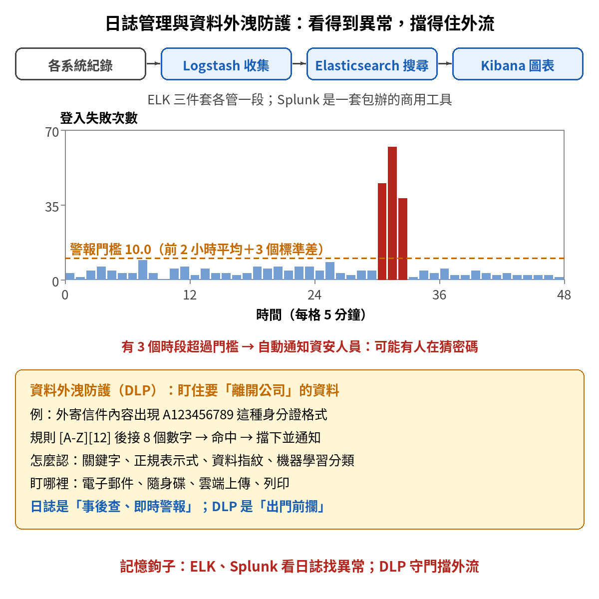
日誌管理（ELK、Splunk）
- 是什麼：把伺服器、資料庫、應用程式、防火牆產生的大量日誌集中收集、儲存、搜尋、分析，用來監控資安事件、偵測異常、事後調查與稽核。
- ELK：Logstash 收集整理、Elasticsearch 儲存與搜尋、Kibana 做圖表與儀表板。
- Splunk：商用的一站式日誌平台。
- 例子：上圖用前 2 小時的「平均＋3 個標準差」當門檻，登入失敗暴增的 3 個時段觸發警報。
資料外洩防護 DLP
- 是什麼：監控並阻止敏感資料未經授權地離開組織：電子郵件、隨身碟、雲端上傳、列印。
- 怎麼認出敏感資料：關鍵字、正規表示式（例如身分證、信用卡號的格式）、資料指紋（比對已登記的敏感文件）、機器學習分類。
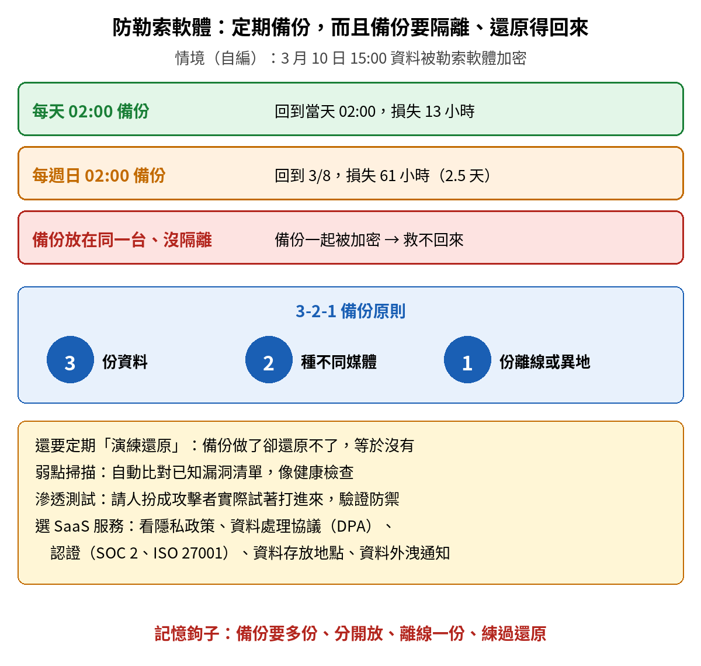
備份與防勒索軟體
- 關鍵：定期備份，而且備份要隔離（離線或不同帳號、不同地點），並定期演練還原。
- 3-2-1 原則：3 份資料、2 種不同媒體、1 份離線或異地。
- 例子：上圖每天備份只損失 13 小時；每週備份損失 61 小時；備份沒隔離就一起被加密。
滲透測試與弱點掃描
- 滲透測試 Penetration Testing：請專業人員模擬攻擊者，實際試著找出並利用漏洞，評估防禦到底擋不擋得住。
- 弱點掃描 Vulnerability Scanning：用工具自動比對已知漏洞清單、設定錯誤，像定期健康檢查。
審查 SaaS 服務商
- 要看什麼：隱私政策、安全措施、資料處理協議（DPA）、合規認證（SOC 2 報告、ISO 27001）、資料存放地點、外洩時怎麼通知。
- SOC 2：由會計師事務所依信任服務準則（安全、可用性、處理完整性、保密、隱私）查核後出具的報告。
整合比較表（資安控制速查表）
| 控制 | 回答什麼問題 | 做法一句話 | 常見例子 |
|---|---|---|---|
| 身分驗證 | 你是誰？ | 確認身分，最好用多因素 | 密碼＋手機碼、MFA |
| 授權 | 你能做什麼？ | 依角色給權限 | 角色型存取控制、IAM |
| 最小權限 | 權限給太多了嗎？ | 只給工作需要的 | 實習生不能刪表 |
| 零信任 | 在內網就安全嗎？ | 每次請求都重新確認 | 持續驗證、分段隔離 |
| 靜態／傳輸中／使用中加密 | 資料在哪個狀態被保護？ | 存著、在路上、在算各自加密 | 磁碟加密、TLS、TEE |
| 用戶端加密 | 雲端員工看得到嗎？ | 上傳前自己加密、自己握金鑰 | 敏感資料上雲 |
| 責任共擔 | 誰負責哪一層？ | 雲顧雲，客戶顧資料與帳號 | IaaS、PaaS、SaaS |
| 日誌管理 | 發生什麼事？ | 集中收集、搜尋、警報 | ELK、Splunk |
| DLP | 資料要外流了嗎？ | 辨認敏感資料、擋下外寄 | 身分證格式規則 |
| 滲透測試 | 真的擋得住攻擊嗎？ | 模擬攻擊者實際試打 | 年度資安測試 |
| 備份 | 被勒索還救得回來嗎？ | 3-2-1、隔離、演練還原 | 離線備份 |
- 驗證認人、授權給門；最小權限只給需要的；零信任每次都驗；MFA 至少兩種因素。
- 加密三狀態：存著、在路上、在算。要連雲端員工都看不到 → 用戶端加密。
- 責任共擔：雲顧好雲，你顧好你的資料和帳號。
- ELK、Splunk 看日誌找異常；DLP 守門擋外流；備份要隔離、練過還原。
單元 ⑤數據治理與 AI 倫理：分類、詮釋資料、血緣、生命週期、最小化、設計即隱私、倫理原則、過濾氣泡
為什麼需要它？ 技術和資安是工具，治理是讓整個組織長期、一致地用好這些工具：資料有沒有分等級、說明書寫清楚了沒、出錯能不能查到源頭、到期有沒有刪。最後還有一層：就算合法，這樣用資料對人公平、對社會好嗎？這就是 AI 倫理。
一步步搭起來
- 先分類。依敏感程度把資料分成公開、內部、機密、高度機密，等級決定保護方式。
- 寫說明書與履歷。詮釋資料說明每個欄位是什麼；數據血緣記錄資料從哪來、經過哪些處理、流到哪去。
- 管生到死。只收需要的（最小化），只留需要的時間（保存期限），到期刪除或匿名化。
- 從設計就想隱私。設計即隱私：從專案最早的階段就放進保護，一路帶到上線。
- 問倫理。公平嗎？說得清楚嗎？出事誰負責？使用者真的懂自己同意了什麼嗎？推薦系統會不會讓人越看越窄？
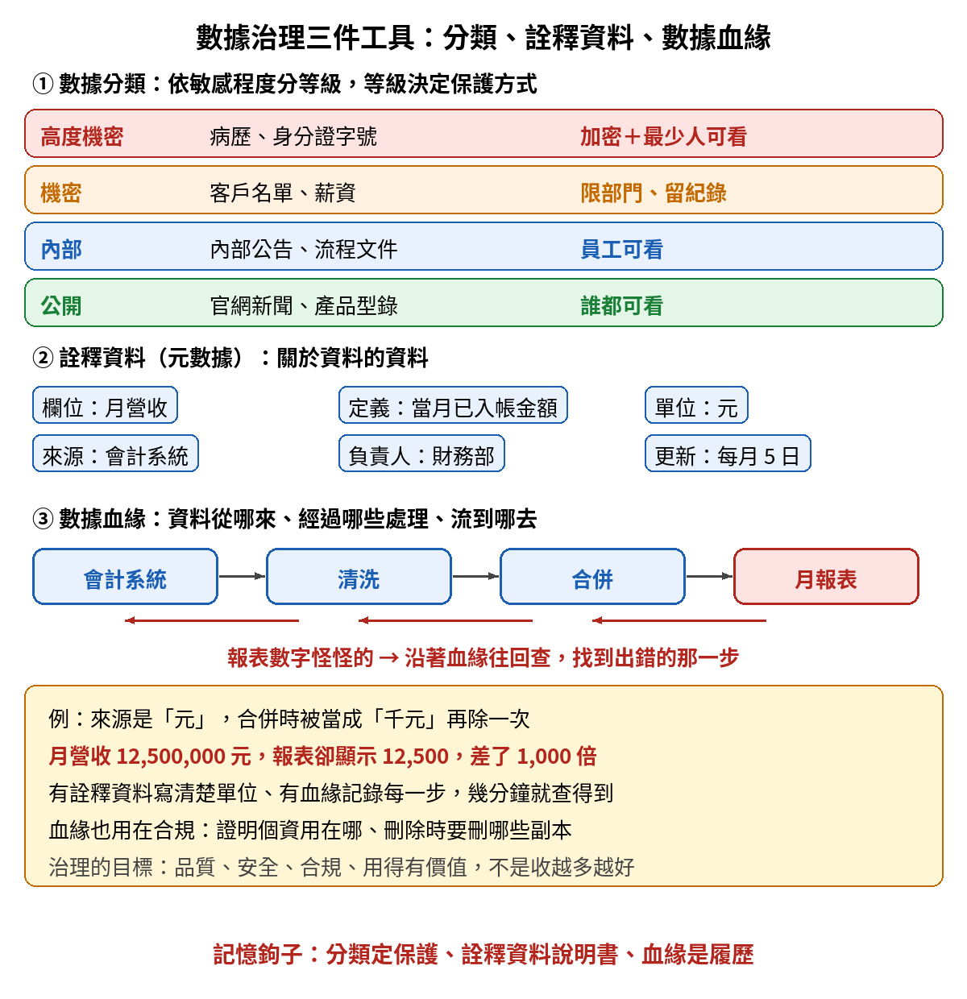
名詞各自定義
數據治理 Data Governance
- 是什麼：一套規則、角色與流程，確保資料品質好、安全、合規、用得有價值。
- 不是：「收越多越好」：不考慮目的、能收就收，反而違反最小化原則，也增加風險。
- 角色：資料擁有者（負責決策）、資料管理員（負責日常品質與定義）。
數據分類 Data Classification
- 是什麼：依資料的敏感性、重要性、合規要求，分成不同等級，例如公開、內部、機密、高度機密。
- 目的：等級決定保護方式：誰能看、要不要加密、能不能帶出公司、保存多久。
詮釋資料（元數據）Metadata
- 是什麼：關於資料的資料：欄位定義、來源、格式、單位、擁有者、更新頻率、品質狀態。
- 比喻：資料的說明書。沒有它，大家對同一個欄位的理解可能不一樣。
數據血緣 Data Lineage
- 是什麼：記錄資料的來源、經過哪些轉換處理、最後流向哪裡。
- 用途：理解資料、追溯錯誤（上圖單位錯誤造成 1,000 倍落差，沿血緣往回查就找到）、影響分析、證明合規（個資用在哪、刪除時要刪哪些副本）。
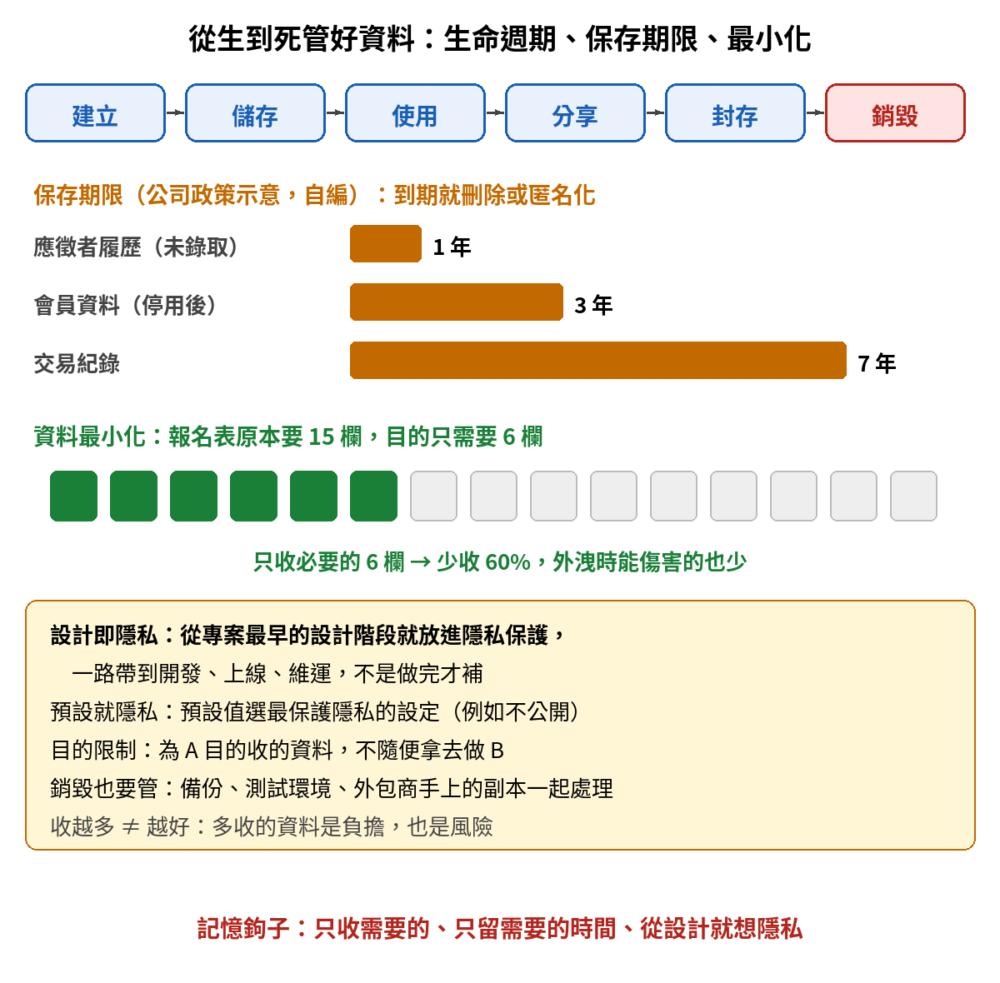
數據生命週期管理 DLM 與保存期限
- 生命週期：建立 → 儲存 → 使用 → 分享 → 封存 → 銷毀。
- 保存期限 Retention Period：依法規與業務需要，定好每類資料保存多久，到期安全地刪除或匿名化，包括備份與外包商手上的副本。
數據最小化與設計即隱私
- 數據最小化：只蒐集、處理與明確合法目的直接相關且必要的個資。上圖 15 欄只需要 6 欄。
- 設計即隱私 Privacy by Design：從專案最早的設計階段就把隱私保護放進去，貫穿整個開發生命週期，而不是做完才補。
- 預設即隱私 Privacy by Default：預設值選最保護隱私的設定，例如預設不公開。
AI 倫理原則
- 公平與非歧視：模型從資料學到並放大社會偏見（性別、族群），對某些群體不公平。
- 透明與可解釋：「黑盒子」難以說明為何這樣決定，就難以發現偏見、難以問責，也可能違反要求說明自動化決策的法規。
- 問責：有明確機制決定責任歸屬（開發者、部署者、使用者），並提供救濟、解釋與補償。
- 告知後同意：真正的「告知」很難：要用一般人看得懂的話，說清楚資料會怎麼用（例如拿去訓練 AI）、有什麼風險。
- 人類福祉：AI 的目標是促進人的繁榮、尊嚴與權利，避免傷害個人或社會。
- 合法≠合倫理：倫理的範圍比法律廣，合法的做法不一定符合社會期待，法律也常跟不上技術。
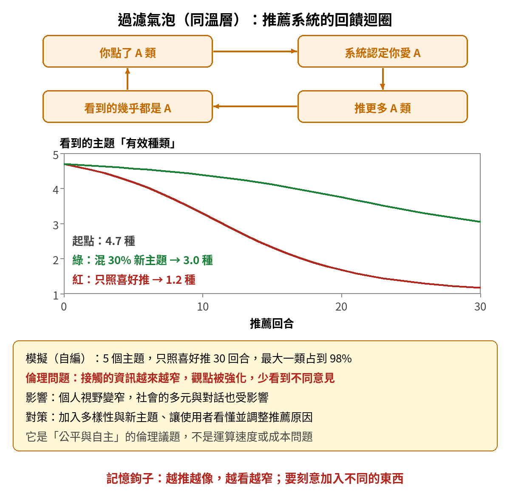
過濾氣泡與同溫層效應
- 過濾氣泡 Filter Bubble：推薦系統依你過去的行為過濾內容，你只看到演算法認為你會喜歡的東西。
- 同溫層（迴聲室）Echo Chamber：身邊的資訊和意見都和自己一樣，彼此附和，觀點越來越強化。
- 回饋迴圈：你點 → 系統更確定你喜歡 → 推更多同類 → 你看到、點到的幾乎都是同類。上圖只照喜好推 30 回合，看到的主題從 4.7 種掉到 1.2 種。
- 倫理問題：限制接觸資訊的廣度與多樣性，固化觀點、減少接觸不同意見，影響個人視野與社會多元。
- 對策：推薦裡加入多樣性與新主題、讓使用者知道並能調整推薦原因、評估指標不只看點擊率。
整合比較表（倫理原則對照表）
| 原則 | 在問什麼 | 常見情境 | 怎麼落實 |
|---|---|---|---|
| 公平與非歧視 | 對不同群體公平嗎？ | 招募、信貸模型學到偏見 | 偏見檢測、資料平衡、分群評估 |
| 透明與可解釋 | 說得出為什麼嗎？ | 黑盒子拒絕貸款 | 可解釋方法、告知決策依據 |
| 問責 | 出事誰負責？ | 模型造成歧視結果 | 明確責任歸屬、申訴與救濟管道 |
| 隱私與告知後同意 | 對方真的懂、真的同意嗎？ | 資料拿去訓練 AI | 白話說明、可撤回同意 |
| 人類福祉 | 對人與社會有益嗎？ | 成癮設計、操縱 | 以人的尊嚴與權利為目標 |
| 多元與自主 | 會不會越看越窄？ | 過濾氣泡、同溫層 | 推薦加入多樣性、讓人能調整 |
| 合法≠合倫理 | 合法就夠了嗎？ | 合法但讓人不舒服的資料用法 | 倫理審查、超出法規的自律 |
- 分類定保護、詮釋資料是說明書、血緣是履歷；治理不是收越多越好。
- 只收需要的、只留需要的時間、從設計就想隱私。
- 倫理六件事：公平、可解釋、問責、真同意、人類福祉、合法≠合倫理。
- 過濾氣泡：越推越像，越看越窄；是多元與自主的倫理問題，不是速度或成本問題。
總整理本章要記的十句話
- GDPR 七項權利：查閱、更正、刪除、限制、可攜、反對、不受純自動化決策；沒有「永久保存權」，方向相反的是儲存期限限制。
- 否定題：先圈「不」，四個選項各標真假，選唯一的假。
- CCPA 重知情與選擇退出；台灣個資法蒐集前要告知；新專案先做 DPIA；資料放哪裡就受哪裡的法律管。
- 拿掉姓名不等於匿名；準識別欄位一組合就可能認出人（重新識別）。
- k-匿名：每筆至少和其他 k−1 筆分不出；l-多樣性：每組敏感值至少 l 種；t-接近：每組分布接近全表。
- 差分隱私加經過計算的雜訊；ε 越小越隱私、越不準；雜訊常用拉普拉斯或高斯。
- 雜訊大小和資料筆數無關，所以資料越少，誤差占比越大。
- 聯邦學習資料不出門，但有 Non-IID、通訊量、裝置快慢的挑戰；怕下毒，改用穩健彙整。SMPC 拆碎片、HE 鎖著算、TEE 關在小房間算。
- 驗證認人、授權給門、最小權限、零信任、MFA；加密分存著、在路上、在算；用戶端加密連雲端員工都看不到；資料和帳號權限是客戶的責任。
- 治理：分類、詮釋資料、血緣、最小化、保存期限、設計即隱私；倫理：公平、可解釋、問責、真同意、人類福祉；過濾氣泡讓人越看越窄。
考前速查全章名詞總彙整表
把五個單元的比較表濃縮成一張。複習時遮住右邊三欄，看名詞說得出定義，再對照。
| 名詞 | 一句話定義 | 口訣 | 容易跟誰搞混 |
|---|---|---|---|
| 單元① 法規與當事人權利 | |||
| 當事人權利（GDPR） | 查閱、更正、刪除、限制、可攜、反對、不受純自動化決策 | 查改刪停帶反 | 編出來的永久保存權 |
| 儲存期限限制 | 只保存到目的所需的時間 | 到期就刪 | 永久保存 |
| 明確同意 | 處理敏感個資的常見依據 | 清楚、主動、特定 | 默許、預設勾選 |
| CCPA／CPRA | 加州消費者的知情、刪除、更正、選擇退出 | 知道與喊停 | GDPR |
| 台灣個資法告知義務 | 蒐集前告知目的、類別、期間等 | 先告知 | 事後通知 |
| DPIA／PIA | 上線前評估並降低隱私風險 | 先評估再上線 | 事後稽核 |
| 資料駐留／主權 | 資料存在哪、受哪國法律管 | 放哪就受哪管 | 資料備份 |
| 單元② 匿名化家族 | |||
| 直接識別 | 一個就認得出人的欄位 | 姓名證號 | 準識別 |
| 準識別 | 組合起來才認得出人的欄位 | 郵遞區號生日性別 | 直接識別 |
| PII | 單獨或組合後能認出特定人的資訊 | 能不能認出人 | 總體統計 |
| 重新識別 | 把去識別資料對回真人 | 比對外部資料 | 解密 |
| 等價類 | 準識別欄位完全相同的一群 | 同一組 | 類別標籤 |
| k-匿名 | 每組至少 k 筆，與其他 k−1 筆分不出 | k 是人數 | l-多樣性 |
| 泛化／抑制 | 換成範圍／直接遮掉 | 變粗／遮掉 | 加密 |
| l-多樣性 | 每組敏感值至少 l 種 | l 是種類 | k-匿名 |
| t-接近 | 每組分布接近全表 | t 是比例 | l-多樣性 |
| 單元③ 差分隱私與協作式隱私 | |||
| 差分隱私 | 加計算過的雜訊，看不出某個人 | 多你少你都一樣 | 匿名化 |
| ε（隱私預算） | 越小越隱私、越不準 | ε 小保護強 | 查詢次數 |
| 敏感度 | 多一個人時結果最多變多少 | 計數＝1 | 準確度 |
| 拉普拉斯／高斯 | 差分隱私常用的兩種雜訊 | 尖頂／鐘形 | 均勻分布 |
| 聯邦學習 | 資料留本地，只傳模型更新 | 資料不出門 | 資料平行 |
| Non-IID | 各地資料分布不一樣 | 各地不同 | 資料漂移 |
| 模型下毒／拜占庭攻擊 | 送惡意更新讓模型變差或植入後門 | 毒更新 | 釣魚、阻斷服務 |
| 穩健彙整 | 用中位數、修剪平均取代直接平均 | 不怕極端值 | 直接平均 |
| SMPC | 多方拆碎片一起算 | 拆碎片 | 同態加密 |
| 同態加密 | 加密狀態下直接計算 | 鎖著算 | 一般加密 |
| TEE | 硬體隔離區域裡運算 | 上鎖的小房間 | 虛擬機 |
| 單元④ 資安控制 | |||
| 身分驗證／授權 | 你是誰／你能做什麼 | 認人／給門 | 彼此 |
| 最小權限 | 只給工作所需的權限 | 夠用就好 | 零信任 |
| 零信任 | 預設不信任，每次都驗 | 內網也要驗 | 防火牆 |
| MFA | 至少兩種驗證因素 | 密碼＋手機 | 強密碼 |
| 靜態／傳輸中／使用中加密 | 存著／在路上／在算 | 三種狀態 | 彼此 |
| 用戶端加密 | 上傳前自己加密、自己握金鑰 | 雲端看不到 | 伺服器端加密 |
| 責任共擔模型 | 雲顧雲，客戶顧資料與帳號 | 各顧各的 | 全交給雲端 |
| 多租戶風險 | 共用平台，一家出事波及別家 | 鄰居失火 | 單一租戶 |
| ELK／Splunk | 集中收集、搜尋、分析日誌 | 看日誌找異常 | DLP |
| DLP | 辨認並擋下敏感資料外流 | 出門前攔 | 防毒軟體 |
| 滲透測試／弱點掃描 | 模擬攻擊／比對已知漏洞 | 實打／健檢 | 彼此 |
| 3-2-1 備份 | 3 份、2 種媒體、1 份離線或異地 | 隔離＋還原演練 | 同機備份 |
| SOC 2／ISO 27001 | 服務商稽核報告／資安管理認證 | 審查服務商 | 法律 |
| 單元⑤ 數據治理與 AI 倫理 | |||
| 數據治理 | 確保資料品質、安全、合規、有價值 | 管好不是收多 | 資料庫管理 |
| 數據分類 | 依敏感程度分等級 | 等級定保護 | 資料清洗 |
| 詮釋資料 | 關於資料的資料 | 說明書 | 資料本身 |
| 數據血緣 | 來源、處理步驟、流向 | 履歷 | 版本控管 |
| 數據最小化 | 只收與目的直接相關且必要的 | 只收需要的 | 資料壓縮 |
| 保存期限 | 到期刪除或匿名化 | 只留需要的時間 | 備份週期 |
| 設計即隱私 | 從最早設計階段放進隱私 | 一開始就想 | 上線後補 |
| 公平／可解釋／問責 | 不歧視／說得清楚／有人負責 | 公平透明可究責 | 準確率 |
| 告知後同意 | 用看得懂的話說清楚用途與風險 | 真的懂才算 | 勾選同意 |
| 過濾氣泡／同溫層 | 推薦讓資訊越來越窄 | 越推越像 | 資料不足 |
動手練自我檢測 10 題
自編情境練習，練的是「看情境選工具、選方法、算數字」。先自己想好答案，再點「看答案」。
- 一位使用者寫信給健身房 App：「請刪除我的運動紀錄，並把我的會員資料用檔案給我，我要搬到另一家 App。」客服回覆：「依規定我們有權永久保存所有會員資料。」使用者在歐盟。請說出他用到哪兩項權利，以及客服的說法哪裡有問題。
看答案
刪除權（被遺忘權）和資料可攜權。客服的說法有問題：GDPR 沒有「永久保存」這種權利，反而有儲存期限限制原則，資料應只保存到目的所需的時間；刪除權有條件，但「有權永久保存所有資料」和 GDPR 的方向相反。
- 一份去識別後的學生資料，依「年級、班級」分組後，四個等價類的人數分別是 5、3、7、4 人。這份資料的 k 是多少？每一筆至少和其他幾筆分不出來？
看答案
k 取最小的一組：k＝3。每一筆至少和其他 k−1＝2 筆分不出來。
- 一份員工健康資料做到 k＝4，但其中一組 4 個人的「慢性病」欄位全都是高血壓。攻擊者知道同事屬於這一組，會發生什麼事？應該補上哪一種方法？
看答案
攻擊者不必知道哪一筆是同事，也能確定同事有高血壓，這是同質性攻擊。k-匿名只管群組大小，要補上 l-多樣性（每組敏感值至少 l 種），必要時再用 t-接近讓每組分布接近全體。
- 兩個團隊公布同一個計數統計：甲隊 ε＝0.2，乙隊 ε＝2，敏感度都是 1，用拉普拉斯雜訊。哪一隊比較保護隱私？兩隊雜訊 95% 大約落在多少範圍內？
看答案
甲隊（ε＝0.2）比較保護隱私，雜訊較大。拉普拉斯尺度＝1 ÷ ε，95% 範圍約 ± 尺度 × ln20：甲隊約 ±15.0，乙隊約 ±1.5。甲隊比較隱私、但數字比較不準。
- 同樣用 ε＝0.5 公布「有幾人曾就醫」：一個村子實際 40 人，一個城市實際 400,000 人。平均誤差各占答案的幾 %？為什麼差這麼多？
看答案
拉普拉斯雜訊的平均誤差＝尺度＝1 ÷ 0.5＝2 人。村子：2 ÷ 40＝5%；城市：2 ÷ 400,000＝0.0005%。雜訊大小只看 ε 和敏感度、和人數無關，所以資料越少，誤差占比越大。
- 聯邦學習有 5 台裝置，送來的更新分別是 0.9、1.1、1、1.2、-30。直接平均和取中位數各是多少？最後那台可能在做什麼？
看答案
直接平均＝-5.16，中位數＝1。最後那台送了極端的值，可能是模型下毒（拜占庭攻擊）。直接平均被它拉成負的，改用中位數、修剪平均這類穩健彙整就不容易被拉走。
- 公司要把客戶合約放到雲端儲存，主管要求「連雲端業者的員工都不能看到內容」。應該用哪一種加密方式？另外，使用者用瀏覽器上傳檔案的那段路程，是哪一種狀態的加密在保護？
看答案
用用戶端加密：在上傳前就在公司這端加密，金鑰自己保管，雲端只拿到密文。上傳那段路程由傳輸中加密（TLS／HTTPS）保護；存進雲端後是靜態加密的範圍。
- 公司用 SaaS 型的客戶管理系統。某員工把含客戶電話的報表分享連結設成「任何人可看」，結果外流。依責任共擔模型，這是誰的責任？另外，公司每 3 天備份一次、備份放在同一台檔案伺服器，16 日被勒索軟體加密，可能會發生什麼事？
看答案
公司（客戶）的責任：在 SaaS 模式下，資料和帳號、分享權限的設定都由客戶負責。備份放在同一台、沒有隔離，很可能和正式資料一起被加密，救不回來；應改成 3-2-1（至少一份離線或異地），並定期演練還原。
- 實習生的帳號可以刪除正式資料表；某天凌晨 3 點，這個帳號從平常沒出現過的國家登入。請用最小權限、零信任、多因素驗證三個觀念，各說一個可以改善的地方。
看答案
最小權限：實習生只需要讀資料，收回刪除權限。零信任：不因帳號密碼正確就放行，異常時間、陌生國家的登入要重新驗證或阻擋。多因素驗證：加上手機驗證碼或實體金鑰，密碼外洩也難登入。也可以把這類異常登入寫進日誌警報。
- 一個新聞 App 只依照點擊紀錄推薦文章，半年後使用者發現首頁幾乎都是同一種立場的文章。這是什麼現象？屬於哪一類問題？請提出兩個對策。
看答案
這是過濾氣泡（同溫層效應），屬於 AI 倫理中資訊多樣性、自主與社會多元的問題，不是技術效能問題。對策例如：推薦中刻意加入不同主題與觀點、讓使用者看到並能調整推薦原因、評估指標不只看點擊率。